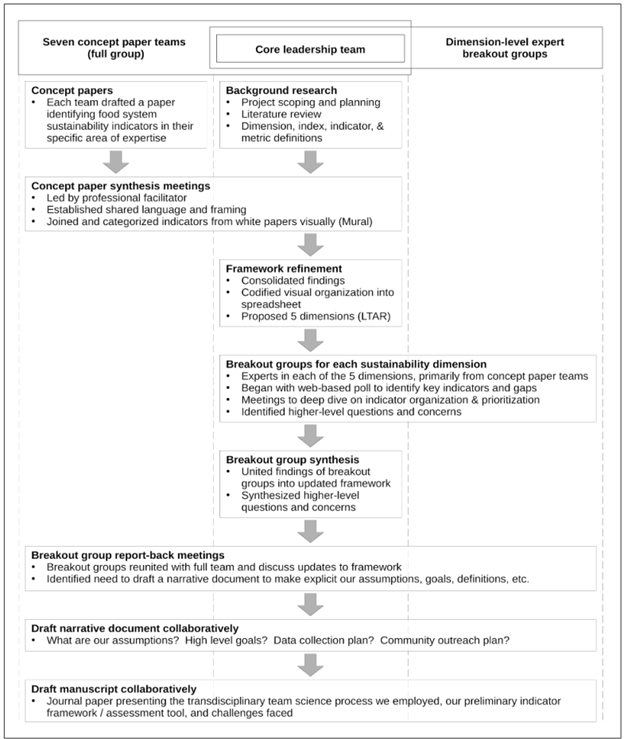

Dr. Josh Taylor (left) and Dr. David Conner (right) at the FSRC Sustainability Metrics workshop in 2024. Photo by Colleen Goodhue, FSRC.
The original framework of dimensions, indices, and indicators representing food system sustainability was developed through a transdisciplinary team science process described in detail by Wiltshire et al. (2024). The figure below shows the structure of this collaborative process.
As the project progressed, a collection of new indicators were proposed across all dimensions, yielding a total of 135 indicators. This full set of indicators is shown in Section 2. Starting in July of 2024, the FSRC has been using a collaborative and transparent process to reduce the number of indicators to manageable amount that can comprehensively represent the food system while being tractable enough to be interpretable and actionable.
More information about this refinement process can be found in the Indicator Refinement pages, including results from surveys on indicator and index importance. Subsequent analyses in the Refined Framework Analysis use this reduce set of indicators. The selection of metrics to represent those indicators is tentative. For now, we are using a larger set of metrics than might be otherwise ideal to give us flexibility to explore which best represent the system and what the consequences are given different numbers and configurations of metrics.

Team science diagram from Wiltshire et al., 2024.
2 Framework Overview
Below is a diagram of all 135 indicators in the framework as of July, 2024. Colors represent dimensions, and splits occur at the dimension and index level. See the table in Section 3 for a more detailed look at indicators.
Code
## Load packagespacman::p_load( ggraph, igraph, dplyr, RColorBrewer, viridisLite)## Load data and add an origin leveldat <-readRDS('data/trees/tree_dat.rds') %>%mutate(Framework ='Sustainability') %>%select(Framework, Dimension:Indicator)## Make edges# include groupings by dimension, then combine themedges <-list()edges$sm_dim <- dat %>%select(Framework, Dimension) %>%unique() %>%rename(from = Framework, to = Dimension) %>%mutate(group = to)edges$dim_ind <- dat %>%select(Dimension, Index) %>%unique() %>%rename(from = Dimension, to = Index) %>%mutate(group = from)edges$ind_ind <- dat %>%select(Index, Indicator) %>%unique() %>%rename(from = Index, to = Indicator) %>%mutate(group = edges$dim_ind$from[match(.$from, edges$dim_ind$to)])edges <-bind_rows(edges)## Make vertices# Each line is a single vertex (dimension, index, or indicator)# We are just giving them random values to control point size for nowvertices =data.frame(name =unique(c(as.character(edges$from), as.character(edges$to))) , value =runif(nrow(edges) +1)) # Add the dimension groupings to the vertices as wellvertices$group = edges$group[match(vertices$name, edges$to)]# Calculate the angles to arrange indicator labelsvertices$id =NAmyleaves =which(is.na(match(vertices$name, edges$from)))nleaves =length(myleaves)vertices$id[myleaves] =seq(1:nleaves)vertices$angle =90-360* vertices$id / nleaves# Calculate alignment of indicator labelsvertices$hjust <-ifelse(vertices$angle <-90, 1, 0)# Flip label angles around 180 degrees if they are facing the wrong wayvertices$angle <-ifelse(vertices$angle <-90, vertices$angle +180, vertices$angle)## Create graph# Make ggraph object from edges and verticesgraph <-graph_from_data_frame(edges, vertices = vertices)# Plot the graphggraph(graph, layout ='dendrogram', circular =TRUE) +# Color edges by dimensiongeom_edge_diagonal(aes(color = group), width =0.5) +# Create text for indicators using angles, hjust, and dimension groupingsgeom_node_text(aes(x = x *1.04,y = y *1.04,filter = leaf,label = name,angle = angle,hjust = hjust,colour = group ),size =2.7,alpha =1 ) +# Make the points for indicators based on dimension groupings# geom_node_point(aes(# filter = leaf,# x = x * 1.07,# y = y * 1.07,# colour = group,# size = value,# alpha = 0.2# )) +# Label the dimensions within the graphgeom_node_label(aes(label =ifelse(name == group, name, NA)),label.padding =unit(0.2, "lines"),label.r =unit(0.3, "lines"),label.size =0.1,size =3 ) +# Various formatting optionsscale_colour_manual(values =brewer.pal(5, 'Set1')) +scale_edge_color_manual(values =brewer.pal(5, 'Set1')) +scale_size_continuous(range =c(0.1, 7)) +theme_void() +theme(legend.position ="none",plot.margin =unit(c(0, 0, 0, 0), "cm") ) +expand_limits(x =c(-2, 2), y =c(-2, 2))
Radial dendrogram of Sustainability Metrics framework
3 Full Indicator Table
Below is an interactive table with the full set of 135 indicators from July of 2024. You can search, filter, and page through the table, and download the filtered set of data as a .csv file using the download button.
Code
pacman::p_load( dplyr, reactable, stringr, htmltools)# Load framework data as a treetree <-readRDS('data/trees/tree_dat.rds')# Load custom reactable table functionsource('dev/get_reactable.R')# Pick out variables to displaydat <- tree %>%select(-c(tooltip, count_))# Make reactable tablehtmltools::browsable(tagList( tags$div(style ="display: flex; margin-bottom: 20px; justify-content: center;", tags$button(class ="btn btn-primary",style ="display: flex; align-items: center; gap: 8px; padding: 8px 12px;",tagList(fontawesome::fa("download"), "Download as CSV"),onclick ="Reactable.downloadDataCSV('indicator_table', 'indicator_framework.csv')" ) ),get_reactable( dat,elementId ="indicator_table",columns =list(Dimension =colDef(minWidth =75),Index =colDef(minWidth =100),Indicator =colDef(minWidth =200) ) ) ))
Wiltshire, Serge, Brian Beckage, Chris Callahan, Lisa Chase, David Conner, Heather Darby, Jane Kolodinsky, et al. 2024. “Regional Food System Sustainability: Using Team Science to Develop an Indicator-Based Assessment Framework.”Journal of Agriculture, Food Systems, and Community Development 14 (1): 1–24. https://doi.org/10.5304/jafscd.2024.141.011.